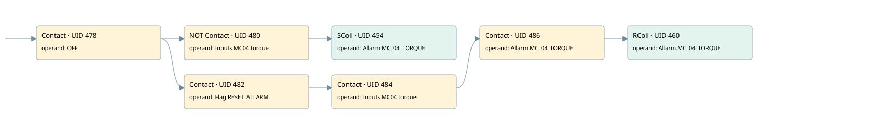

mc04 deleted
allarms 1 · 검색 색인 순서 12 · 원본 내부 NID 추정 13
백업 PLF 원본의 3043432 바이트 위치에서 복원한 XML. 검색 문서 1792의 객체 키 161022005e62000000000000와 연결했다. 이름 해석 7/7개. 남은 RefId는 상수 또는 미해석 참조다.
연결 구조 다시 그리기
원본 Part/PCon/Wire를 이용한 연결도다. TIA 화면의 래더 배치 또는 실행 결과를 재현한 그림은 아니다. 핀 연결은 아래 표와 원본 XML을 기준으로 읽는다. 노드 위에 마우스를 두면 피연산자 이름을 볼 수 있다.

접점·코일·블록과 피연산자
| Part UID | Gate | Negated 핀 | 연결 피연산자 |
|---|---|---|---|
| 478 | Contact | operand = OFF | |
| 480 | Contact | operand | operand = Inputs.MC04 torque |
| 454 | SCoil | operand = Allarm.MC_04_TORQUE | |
| 482 | Contact | operand = Flag.RESET_ALLARM | |
| 484 | Contact | operand = Inputs.MC04 torque | |
| 486 | Contact | operand = Allarm.MC_04_TORQUE | |
| 460 | RCoil | operand = Allarm.MC_04_TORQUE |
접점 경로를 펼친 조건식
Contact·O/A·비교기의 원본 연결을 읽기 쉽게 펼친 보조 해석이다. POWER는 전원 레일 시작을 뜻한다. 호출 블록·에지·타이머의 내부 동작과 다중 쓰기 순서는 이 표로 실행 검증하지 않았다. 미해석 핀과 RefId는 원문 연결표에서 확인한다.
| UID | 동작 | 대상 | 원본 접점 경로 | 내용 |
|---|---|---|---|---|
| 454 | SCoil | Allarm.MC_04_TORQUE | (OFF AND NOT [Inputs.MC04 torque]) | 조건 성립 시 Set |
| 460 | RCoil | Allarm.MC_04_TORQUE | (((OFF AND Flag.RESET_ALLARM) AND Inputs.MC04 torque) AND Allarm.MC_04_TORQUE) | 조건 성립 시 Reset |
원본 배선 연결
| Wire UID | 동일 Wire 연결 끝점 |
|---|---|
| 488 | Powerrail {} ↔ Part 478.in |
| 34 | ORef 35 (OFF) ↔ Part 478.operand |
| 479 | Part 478.out ↔ Part 480.in ↔ Part 482.in |
| 27 | ORef 28 (Inputs.MC04 torque) ↔ Part 480.operand |
| 36 | Part 480.out ↔ Part 454.in |
| 37 | ORef 38 (Allarm.MC_04_TORQUE) ↔ Part 454.operand |
| 472 | ORef 464 (Flag.RESET_ALLARM) ↔ Part 482.operand |
| 483 | Part 482.out ↔ Part 484.in |
| 473 | ORef 465 (Inputs.MC04 torque) ↔ Part 484.operand |
| 485 | Part 484.out ↔ Part 486.in |
| 474 | ORef 466 (Allarm.MC_04_TORQUE) ↔ Part 486.operand |
| 487 | Part 486.out ↔ Part 460.in |
| 476 | ORef 467 (Allarm.MC_04_TORQUE) ↔ Part 460.operand |
식별자 해석 근거 7개
| ORef UID | RefId | 이름 | IdentXmlPart 파일 | 해석 방법 |
|---|---|---|---|---|
| 35 | 46 | OFF | 0658-IdentXmlPart.xml | UID/RID + search-text + NID agreement |
| 28 | 276 | Inputs.MC04 torque | 0657-IdentXmlPart.xml | UID/RID + search-text + NID agreement |
| 38 | 58 | Allarm.MC_04_TORQUE | 0657-IdentXmlPart.xml | UID/RID + search-text + NID agreement |
| 464 | 13 | Flag.RESET_ALLARM | 0657-IdentXmlPart.xml | UID/RID + search-text + NID agreement |
| 465 | 276 | Inputs.MC04 torque | 0657-IdentXmlPart.xml | UID/RID + search-text + NID agreement |
| 466 | 58 | Allarm.MC_04_TORQUE | 0657-IdentXmlPart.xml | UID/RID + search-text + NID agreement |
| 467 | 58 | Allarm.MC_04_TORQUE | 0657-IdentXmlPart.xml | UID/RID + search-text + NID agreement |
검색 코드 보조 자료
참조 명칭을 찾기 위한 자료이며 실행 순서나 AND/OR 관계는 위 연결표로 확인한다.
"off" "inputs"."mc04 torque" "allarm".mc_04_torque "flag".reset_allarm "inputs"."mc04 torque" "allarm".mc_04_torque "allarm".mc_04_torque